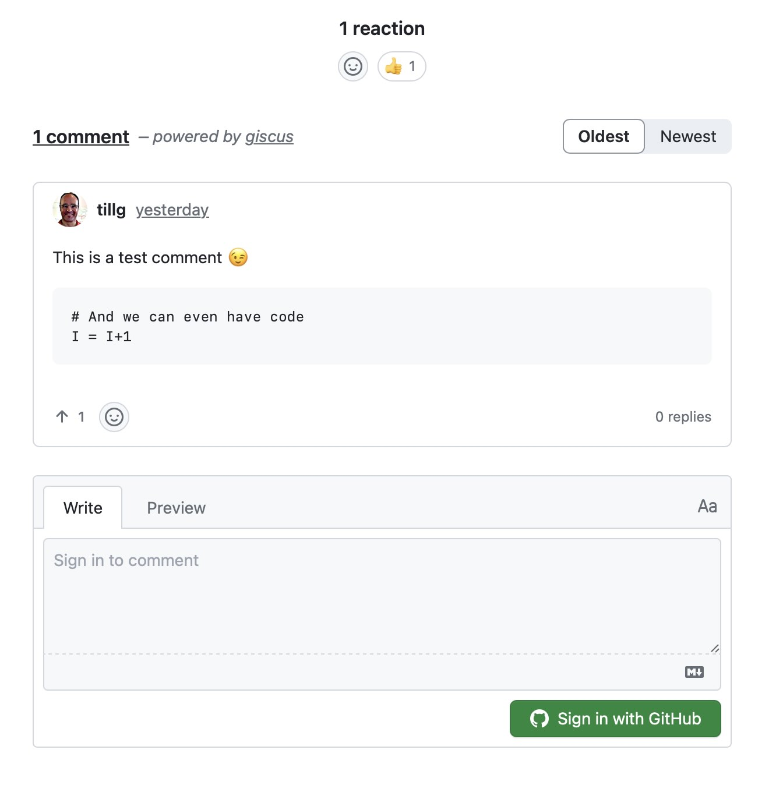

Beyond Vibe coding - Redesigning Filmz

Some time ago I built a little iOS App called Filmz with vibe_coding. Turns out that’s nice until you end up vibe debugging. So now I take a new attempt, starting in a more structured way.
Some time ago I built a little iOS App called Filmz with vibe_coding. Turns out that’s nice until you end up vibe debugging. So now I take a new attempt, starting in a more structured way.
Notes about findings and understandings around Model Context Protocol aka _MCP.

Every couple of years you get the opportunity to setup a new Mac. It’s typically a enjoyable process, yet it eats up some time. In order top make it a structured enjoyable process, here is my note to future-me of what I have to install, and in what order …
I now have a Pelican based blog and want to automagically add or fix content: Picture tags, article summaries, translations… Finally a wa to use AI 🤖


